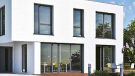
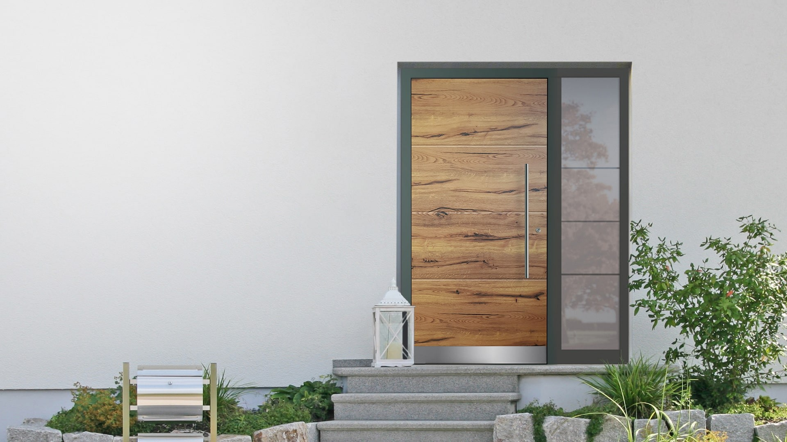
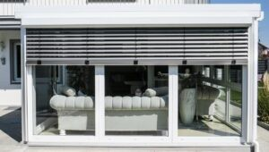

Vier Gewerke, ein Anspruch. Von der ersten Beratung im Musterraum bis zur Montage durch unser eigenes Team — alles aus einer Hand, fest verwurzelt in der Region Augsburg.
Vom Schnelltausch ohne Maurerarbeiten bis zur kompletten Sanierung. Wir setzen, was passt — und reparieren, was sich noch lohnt.

Von der klassischen Holztür bis zur einbruchsicheren Aluminium-Designtür. Wir beraten im Musterraum, konfigurieren online und montieren vor Ort.

Geplant, genehmigt, gebaut. Vom Erstgespräch bis zur Bauabnahme durch eigene Monteure — auch für bestehende Wintergärten, die ein Update brauchen.

Funktional und elegant. Ein Vordach gehört zur Visitenkarte des Hauses — wir passen es an Stil, Material und Geometrie Ihrer Fassade an.
Über 300 m² Ausstellungsfläche in Affing-Mühlhausen. Fenster, Haustüren und Wintergärten in echter Größe zum Anfassen, Öffnen und Vergleichen.